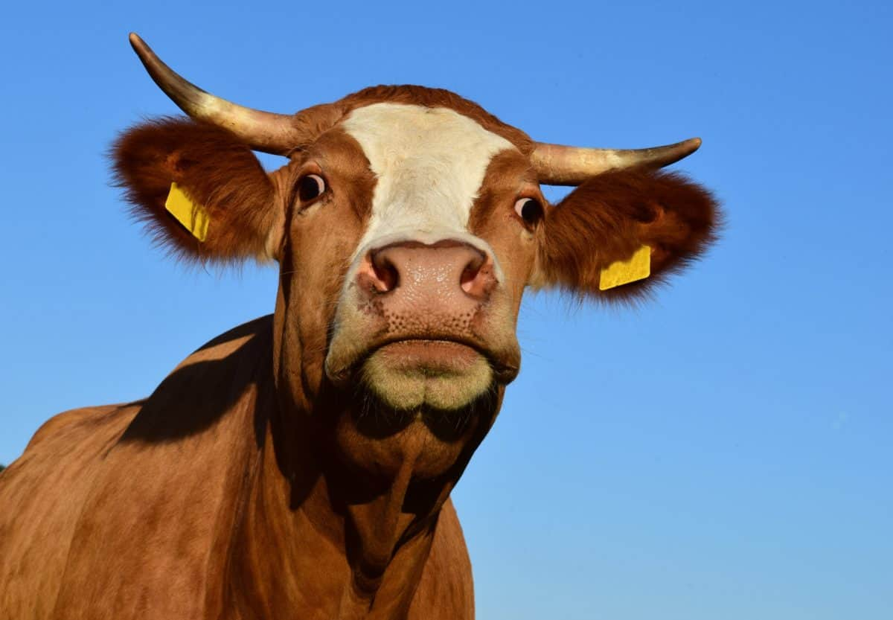
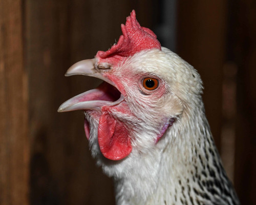
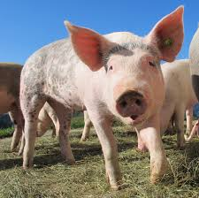
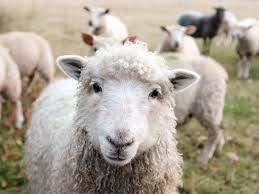
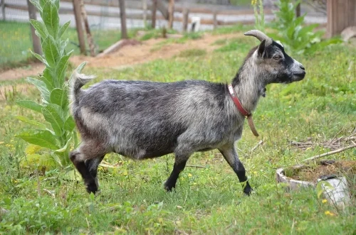

A Fazenda do Sr. Carlos
Sr. Carlos tem uma fazenda. Vamos dar uma olhada nos animais que ele tem!

Vaca
A vaca é um animal domesticado, criado para a produção de leite e carne. São conhecidas por sua natureza dócil.

Galinha
A galinha é uma ave domesticada, criada para a produção de ovos e carne. São conhecidas por ciscar o chão.

Porco
O porco é um animal domesticado, criado para a produção de carne. São conhecidos por sua inteligência.

Ovelha
A ovelha é um animal domesticado, criado para a produção de lã, carne e leite. Vivem em grupos.

Cabra
A cabra é um animal domesticado, criado para a produção de leite, carne e pele. Conhecidas por sua agilidade.
Pato
O pato é uma ave domesticada, criada para ovos, carne e penas. Conhecidos pela habilidade de nadar.